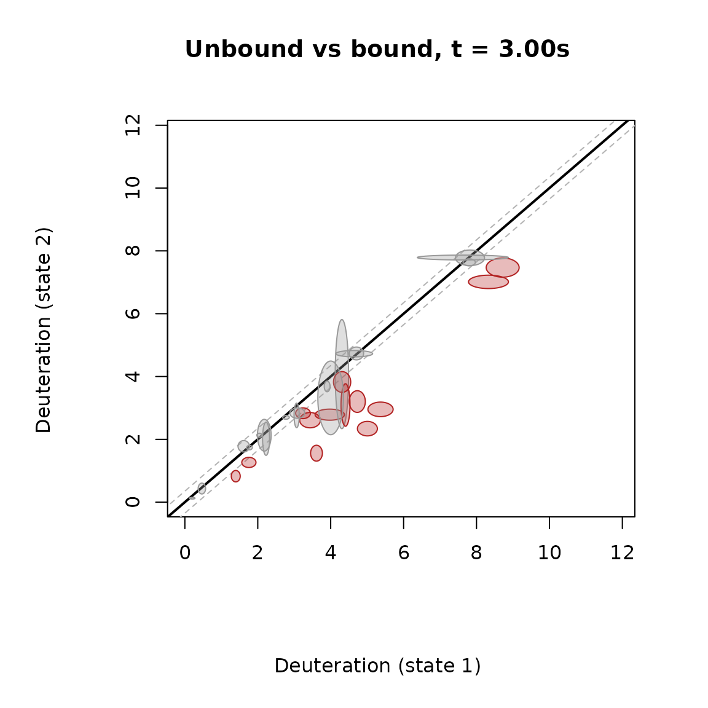
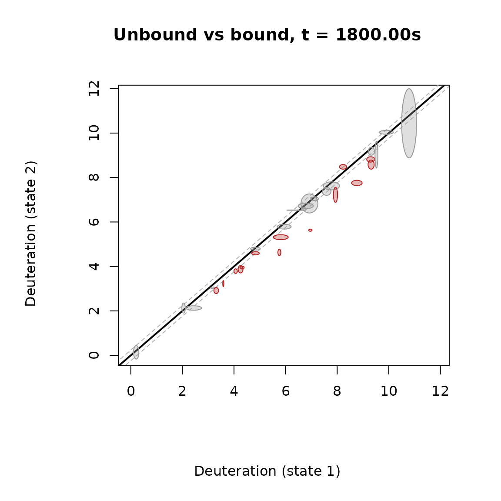
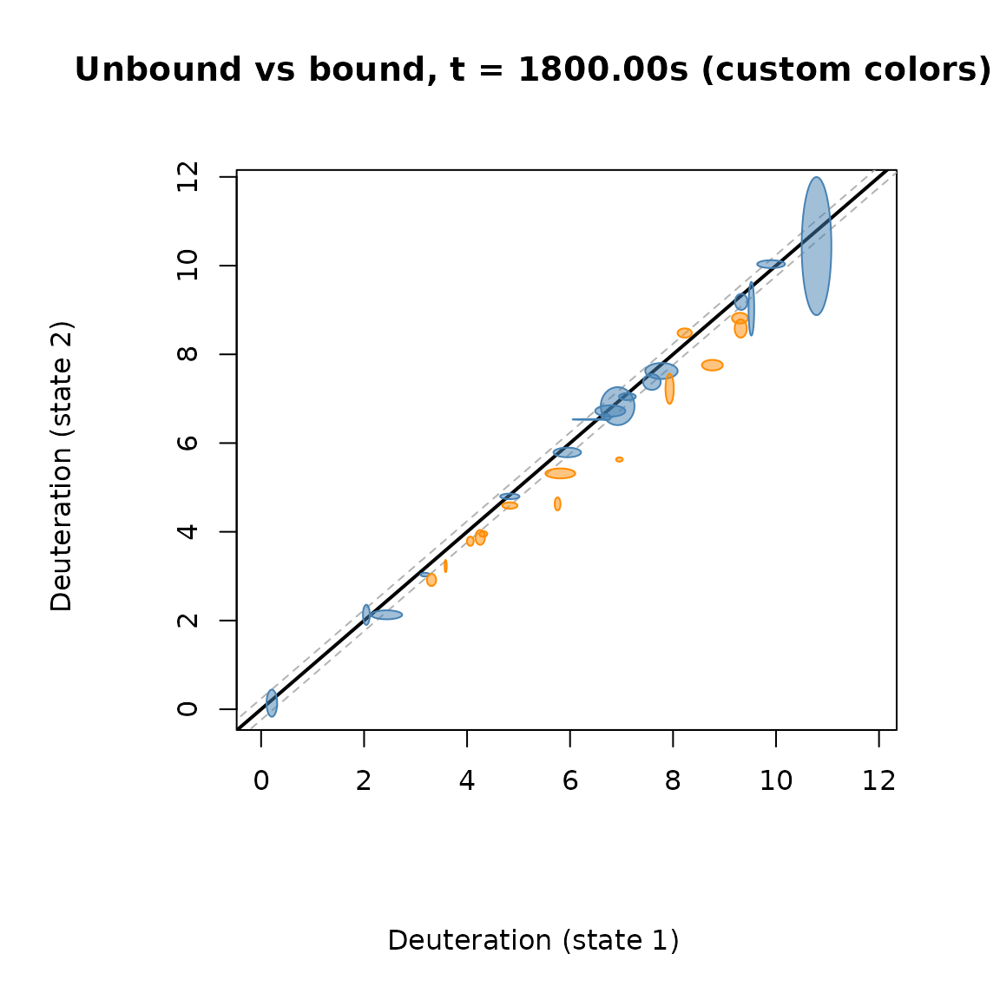
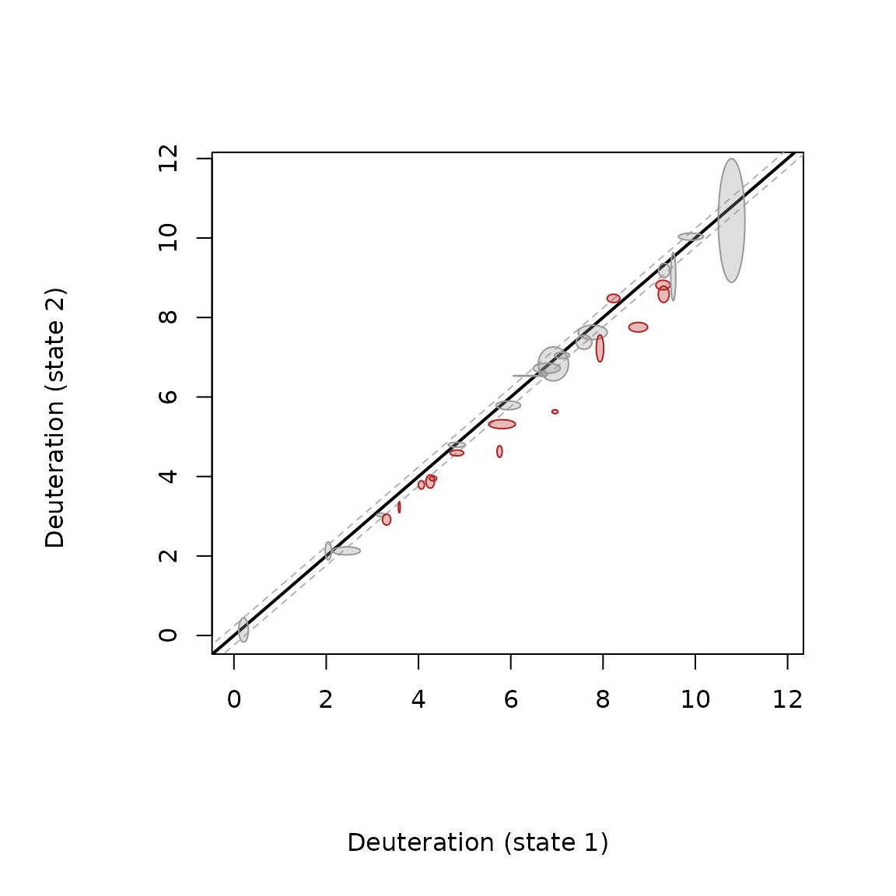

The fissure vent plot compares two protein states peptide by peptide. It uses the same significance test as the rest of the package (Hageman & Weis, Anal. Chem. 2019, 91, 8008-8016). The difference from a volcano plot is that the deuteration of both states stays on the plot.
How to read it
- x axis: deuteration of state 1. y axis: deuteration of state 2.
- The black diagonal (y = x) means no change between the states.
- The dashed grey lines are the critical interval (CI). It is
calculated from the standard deviations of all peptides at that time
point (
CI_2pts()). - Each peptide is an ellipse. The ellipse comes from the Welch t-test of that peptide. If the ellipse touches the diagonal, the peptide’s p-value is above the cutoff.
- A peptide is significant (colored) when it is outside the grey lines and its ellipse does not touch the diagonal.
The size of the ellipse shows how precise the replicates are. A small ellipse means the replicates agree well.
Example
library(HDXBoxeR)
file_nm <- system.file("extdata", "All_results_table.csv", package = "HDXBoxeR")
a <- output_tp(file_nm)
#> Protein.States used: Unbound bound
#> Deut.times used: 3.00s 60.00s 1800.00s 72000.00s
#> 29 peptide row(s) dropped: 29 not measured in every state, 0 with fewer than 2 replicate value(s)
#> Number of replicates used: Unbound=3 bound=3
#> no csv file writtenKeep the figure square (fig.width = fig.height), so the
diagonal stays at 45 degrees.
plot_fissure_vent(df = a, times = "3.00s", alpha = 0.01, pvalue = 0.01,
state1 = "Unbound", state2 = "bound")
#> time 3.00s: CI = 0.350
#> (1 peptide(s) skipped: NA average or ellipse, e.g. identical-valued replicates)
title(main = "Unbound vs bound, t = 3.00s")
Most peptides sit on the diagonal: at 3 s the states hardly differ. The colored peptides are above the diagonal and their ellipses have cleared it.
A later time point:
plot_fissure_vent(df = a, times = "1800.00s", alpha = 0.01, pvalue = 0.01,
state1 = "Unbound", state2 = "bound")
#> time 1800.00s: CI = 0.239
#> (1 peptide(s) skipped: NA average or ellipse, e.g. identical-valued replicates)
title(main = "Unbound vs bound, t = 1800.00s")
Colors and transparency can be changed with sig_col,
nonsig_col, and fill_alpha:
plot_fissure_vent(df = a, times = "1800.00s", alpha = 0.01, pvalue = 0.01,
state1 = "Unbound", state2 = "bound",
sig_col = "darkorange", nonsig_col = "steelblue", fill_alpha = 0.5)
#> time 1800.00s: CI = 0.239
#> (1 peptide(s) skipped: NA average or ellipse, e.g. identical-valued replicates)
title(main = "Unbound vs bound, t = 1800.00s (custom colors)")
The function also returns the numbers behind the plot:
res <- plot_fissure_vent(df = a, times = "1800.00s", state1 = "Unbound", state2 = "bound")
#> time 1800.00s: CI = 0.239
#> (1 peptide(s) skipped: NA average or ellipse, e.g. identical-valued replicates)
head(res[res$is_sig, c("Start", "End", "Sequence", "delta", "p_value", "ci")])
#> Start End Sequence delta p_value ci
#> 3 47 63 VVPGPAEHPLQYNYTFW -1.3283333 3.565653e-07 0.2392609
#> 4 62 77 FWYSRRTPGRPTSSQS -0.4833333 4.094323e-04 0.2392609
#> 5 63 77 WYSRRTPGRPTSSQS 0.2540000 2.730316e-03 0.2392609
#> 8 82 88 IKQIGTF -0.2750000 7.527130e-04 0.2392609
#> 9 89 97 ASVEQFWRF -1.1290000 6.604370e-05 0.2392609
#> 11 95 115 WRFYSHMVRPGDLTGHSDFHL -0.7106667 2.100848e-03 0.2392609Useful options
-
p_adjust = "BH": corrects the p-values for multiple testing. -
output_tp(..., percent = "per_residue"): uptake per residue, so peptide length does not affect the result. -
sd_source = "CI": the older, wider critical interval.
Good to know
- Only the extent of the ellipse across the diagonal is a confidence interval. Its width and height alone are not.
- A peptide with identical replicates in both states cannot be tested. It is skipped, and a message says so.
How this connects to the rest of the package
All of these use the same significance test; they differ in what they show.
| Question | Use |
|---|---|
| The classic difference vs p-value picture | plots_vol_tp() |
| The list of significant peptides |
diff_peptides_prep(),
hdx_results_table()
|
| Both states’ uptake, with uncertainty, peptide by peptide |
plot_fissure_vent() (this vignette) |
| The same, interactive and linked to other plots |
interactive_fissure_vent()
(vignette("interactive_explorer")) |
| More than two states |
compare_states_tp()
(vignette("multistate")) |
| A whole region or time course |
compare_regions(), compare_timecourse()
(vignette("multistate")) |
| Single residues |
residue_deconvolution(),
residue_level_average(),
residue_regions()
|